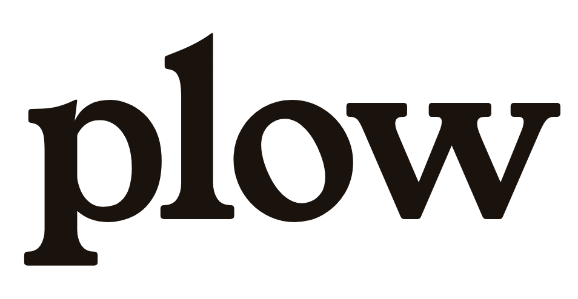

Young Serif
Know your ground.
See where your coding agents get stuck, from the first message to a feature in customers’ hands.
Regular 400 for the wordmark, headings, and main copy. Set the landing-page intro at 17–23 px.
Young Serif licenseKnow your ground.
Good code starts with good ground.

Write Plow in prose. Set the wordmark in lowercase Young Serif Regular, with about one letter of clear space around it.


Know your ground.
See where your coding agents get stuck, from the first message to a feature in customers’ hands.
Regular 400 for the wordmark, headings, and main copy. Set the landing-page intro at 17–23 px.
Young Serif licenseCycle time · 17 of 29 shipments measured
Regular 400 at 12–14 px for labels, times, and controls. Keep optical sizing enabled.
Source Serif 4 licenseUse Ink for labels on Meadow. Meadow clears 3:1 against both light colors and Wet Earth for graphical accents.
The Long Field opens the page. Keep the horizon low and leave room for the headline beneath the cloud bank.


Stay calm and specific. Write about work, checks, release, and waits. Use the farming metaphor to frame the brand idea, then explain what Plow sees in plain English.
Know your ground.
See where your coding agents get stuck, from the first message to a feature in customers’ hands.
See a delivery
Harbor’s chart component baseline is under review. Use Meadow for graphical accents and give stages and measured wait times direct labels. Distinguish publication from verified access.
Keep the page frame and surrounding controls steady. Inside a panel, content can scroll, filter, expand, or collapse. When a filter removes a row, close the gap it leaves.